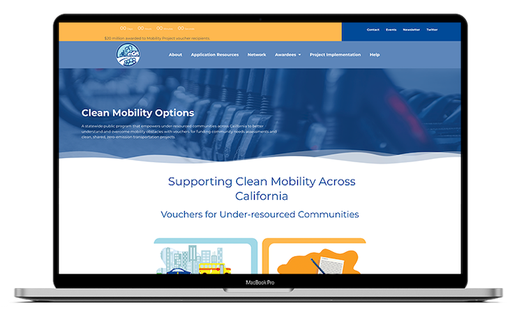

Clean Mobility Options Webpage Redesign

The Clean Mobility Options team at CALSTART was just beginning to start the redesign process when I started as an intern with them. I jumped on the website and began fixing small things in the old website and then began to design the new website. I would take the old website pages and recreate them to be engaging, interesting and beautiful, while also displaying the information that was needed.
Role: UX Designer
Company: CALSTART
Date Completed: November 2021
The Problem:
I was brought onto the team to aid in the redesigning of their website. As a new member to the team, I was ready to get started and work to use my skills to help in this process. We began first with any small necessary changes on the existing website and then set off to see what was wrong and how we create it a new.
Before anything else, a page outline was needed. We needed to know how many pages there were in the site. Wow many of those were the main pages and needed to be found in the menu? Which pages in the menu had a drop down leading to similar pages?

We decided to create a Miro group where I began to create multiple designs according to what we had decided on for the redesign. Using the Brand Guide that was provided, we decided on colors and fonts that would work best, always checking back to make sure it would all be ADA compliant and match the new feel they were going for with a redesign.
There were many changes as we went through this process, refining the colors so that the website looked and felt professional, and creating a whole new feel to the website.
As we went on through each design for each page, we created a header and footer, and made sure each page continued with the same design aspects. When needed, I would create icons/logos for the pages.

The end result was clean and new. Aiding to the original purpose of the website and team.
